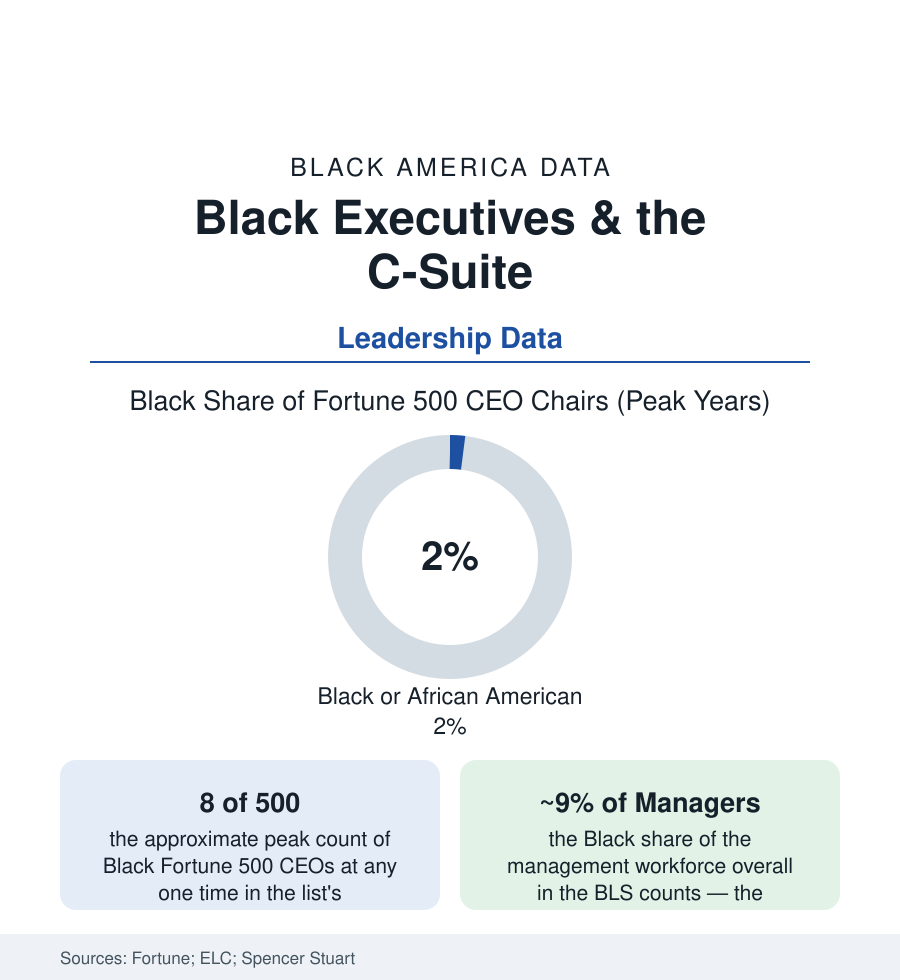

Black Employment
Black Executives and the C-Suite: Eight Chairs at the Fortune 500 Table
Black CEOs of Fortune 500 companies have never numbered more than a handful at once — about 1-2% of the chairs for 13% of the workforce. The executive data.

The steepest pyramid in this section stands at its top: Black Americans hold roughly nine percent of management jobs in the BLS counts, a mid-single-digit share of the senior-executive tier in the corporate diversity reports — and, at the apex, a count of Fortune 500 CEO chairs that has oscillated between about four and nine across two decades, never reaching two percent of the five hundred. The first Black Fortune 500 CEO took the chair in 1999 (Franklin Raines at Fannie Mae in the standard accounting, with Clifton Wharton Jr.'s TIAA-CREF leadership the precursor case of the record). A quarter-century later the count is a number you can recite. This article reads the executive file.
The Funnel's Narrowing, Level by Level
The diversity reports of the large firms and the board indexes let the funnel be drawn with unusual precision: professional and managerial entry at or near the workforce share (the MBA and analyst classes' data), the first narrowing at the director level (the span-of-control assignments and P&L postings — the 'line versus staff' sorting the Executive Leadership Council's research names as the funnel's decisive valve: Black executives concentrated disproportionately in staff functions — HR, legal, communications, diversity — whose ladders historically do not reach the chair, against the line roles in operations and revenue that do), the second narrowing at the senior-vice-president and C-minus-one tier (the succession slates' composition in the Spencer Stuart and consultancy data), and the board's final call among the two or three internal finalists — the stage where the 'ready-now' judgment, undocumented by design, does its work. The board data frame the same pyramid from the governance side: Black directors at roughly eleven percent of Fortune 500 board seats in the recent Spencer Stuart counts (up from the high single digits across the post-2020 appointment wave — the wave itself now measurable in the appointment data's deceleration), with the audit, compensation, and nominating committee chairs — the seats that hire CEOs — thinner in the same tables.
The Chairs Themselves: The Recorded Few
The named record is short enough to be a syllabus: the pioneers (Raines; Kenneth Chenault's two decades at American Express; Richard Parsons at Time Warner and Citigroup's chair; Stanley O'Neal at Merrill Lynch; Clarence Otis at Darden; Ursula Burns at Xerox — the first Black woman to lead a Fortune 500 house, her successor count in the following decade and a half: the fingers of one hand, with gaps of years at zero), the current era's chairs (the retail, pharma, finance, and industrial names of the present list — each appointment a news event, which is itself the data), and the pattern inside the appointments the governance studies keep documenting: the 'glass cliff' finding (Black and women CEOs appointed disproportionately at companies in distress, their tenures' starting conditions worse in the matched analyses — the turnaround chair as the door's shape), the interim-to-permanent conversions that stall, and the pay data's parity-at-the-top footnote (the few who reach the chair are paid at the market's rates in the proxy data — the barrier is the door, not the desk). The ELC's membership rolls — the Black executives at VP-and-above across corporate America, roughly a thousand names in its counts — are the empirical refutation of the pipeline alibi at the final level: the bench exists, credentialed and counted, one floor below the door.
The Wider Executive Economy
Below the Fortune apex the executive economy is broader and its data better: the Black presidents of universities, hospital systems, foundations, and major nonprofits in their associations' counts (a thicker tier, the mission sector's ladder running differently); the Black partners of the major law and accounting firms (the partnership data: low single digits at the equity tier of the Am Law firms in the NALP counts, the Big Four similar in their published figures); the founders-CEOs of the business section (the chair by construction rather than appointment — the ownership route's answer to the funnel); and the public sector's executive tier (the city managers, agency heads, and university-system chancellors of the public file — the SES counts in the federal data running ahead of the corporate apex's share). The research consensus in the management literature assigns the Fortune count's causes in an order the funnel data support: the line-role sorting first, the sponsorship gap second (the P&L presidents' sponsors in the succession studies), the board's risk template third — each a mechanism, each measurable, none a mystery.
Reading the Executive Data
Nine percent of the managers, a thousand-name bench, and never nine simultaneous chairs: the C-suite file is the employment section's purest ratio — the distance between the workforce a company draws on and the table it is finally run from. The counts are published quarterly and they move by ones. In a dataset of five hundred chairs, that movement rate is the finding.
More in Black Employment
The Black Unemployment Rate: The Two-to-One Pattern
Black unemployment runs at roughly twice the White rate — 5.5 percent against 3.3 percent in annual averages — a ratio stable across five decades of federal data. How it is measured and why it persists.
Black Median Weekly Earnings: The 80-Cent Ratio
Black full-time workers earn a median of about $900 a week — roughly 80 cents for every dollar White workers earn. The BLS earnings data by group, gender, and occupation.
Black Labor Force Participation: Working at National Rates
Black labor force participation runs at roughly the national rate — and Black women participate at higher rates than White women. The BLS participation data.
Source: Fortune 500 records; Executive Leadership Council; U.S. Bureau of Labor Statistics, Current Population Survey (managers); Spencer Stuart Board Index; Deloitte board diversity studies.